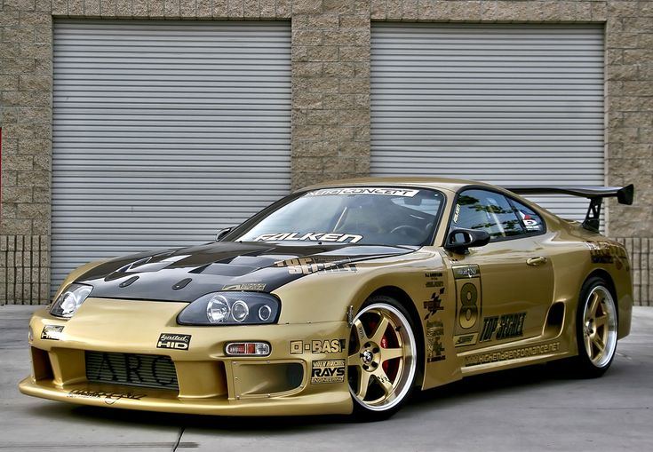

toyota supra mk4
Aunque el Supra es un auto que data desde 1978. Es el Mk4, lanzado en 1993, el modelo más emblemático, siendo la estrella de la primera entrega de Fast and the Furious.
Más allá de su atractiva carrocería tipo targa, este auto encontraba en el robusto seis cilindros en línea twin turbo 2JZ-GTE de 3.0 litros (capaz de entregar 320 Hp),
su principal atractivo. Para las versiones base, estaba disponible
este mismo propulsor, pero sin la inclusión de un turbo solo era capaz de entregar 220 caballos. Un auto emblemático, y bastante codiciado por los coleccionistas.
carro stock

carro modificado

volver